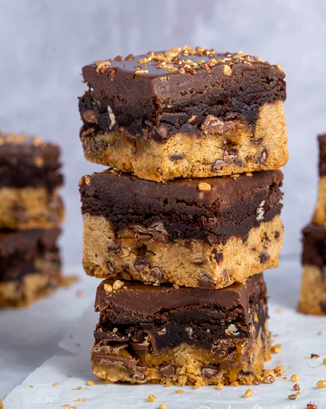

Gluten-free Yorkshire Pudding Recipe

Gluten-free Yorkshire pudding recipe - the ONLY recipe you'll ever need and easy to make in a standard
cupcake/muffin tray.
They rise beautifully and only need 3 ingredients! You can even make them dairy
free
too.
⏳30 mins, üßçServes 12
Equipment
- Muffin/cupcake tray.
Ingredients
- 200 g cornflour (cornstarch)
- 6 eggs
- 300 ml milk (dairy-free if necessary)
- 50 ml cooking oil
Instructions
- Preheat your oven to 220°C/200°C fan/425°F.
- Add just around a tsp of oil to each of the holes in the muffin tin.
- Place your tin in the oven for 10-15 minutes until the oil is super hot, basically spitting!
- Whilst your oil is heating, beat/whisk your 6 eggs into your cornflour in a big mixing bowl.
- Once thoroughly combined, gradually add your milk a little at a time. Mix together - I use a non-electric whisk for this.
- Pour your Yorkshire pudding batter into a jug so it's easier to pour into each hole.
- Next you need to be quick! Remove your muffin tray from the oven and immediately fill each hole with
your mixture until just under 3/4 full
(for really big yorkies or under half full for more modest but equally epic yorkies!).
They should sizzle a little. Be very quick here and get them back in the oven asap! - Place back in the oven and bake for around 15-20 minutes until golden and risen.
!!!(NEVER open the oven door during their bake, this will ruin them!) - Remove from your oven once cooked and serve up with a delicious roast dinner (lots of gravy!).
- Enjoy!
Nutrition
Serving:Per porsion| Calories: 143kcal | Carbohydrates: 14g | Protein: 5g | Fat: 7g | Saturated
Fat: 1g |
Polyunsaturated Fat: 5g
| Cholesterol: 95mg | Sodium: 48mg | Fiber: 1g | Sugar: 2g
Gluten-free Coconut Chicken Curry Recipe

Gluten-free coconut chicken curry recipe - low FODMAP, dairy-free and easy to make in 30 minutes!
Coeliac-friendly and wheat free too of course..
⏳45 mins, üßçServes 4
Ingredients
For the spice blend:
- 2 tbsp curry powder
- 1 tbsp paprika
- 1 tsp cinnamon
- 1/2 tsp ground ginger
- 1/2 tsp asafoetida
For the curry:
- 20 ml cooking oil
- 1 tbsp garlic infused olive oil
- 2 chicken breasts chopped
- 200 ml canned coconut milk
- 200 ml Greek yoghurt
- 1 tbsp tomato puree
- 6 eggs
- 1 tbsp lemon juice optional
- 1-2 handfuls of spinach
To serve:
- Handful of fresh chives chopped
- Fresh coriander
- Basmati rice I add 1 tsp of turmeric to mine to make it yellow
Instructions
- Place your pan over a medium heat and add a tbsp of garlic-infused oil.
Once heated, add your chicken chunks and fry until almost sealed. - Add your spice mix and stir fry for 1 minute.
- Next add your coconut milk and tomato puree. Stir and then simmer for about 10-15 minutes.
- Add your spinach and lemon juice, if using. Cook until the spinach has wilted down
- Lastly, add your yoghurt and mix in.
- Sprinkle of some fresh chives and top with fresh coriander!
Serve up with basmati rice and my 3-ingredient gluten-free naan bread. - Enjoy!
Nutrition
Serving: Per porsion | Calories: 454kcal | Carbohydrates: 30g | Protein: 34g | Fat: 23g |
Saturated Fat:
15g |
Polyunsaturated Fat: 7g | Cholesterol: 72mg | Sodium: 148mg | Fiber: 5g | Sugar: 6g
Gluten Free Festive Brookie Bars
Gluten free brookie bars recipe, anyone? They're a combo of a choc chip cookie and a gooey brownie on
top.
See the blog post above for advice on making these dairy free.
⏳50 mins, üßçServes 8
Equipment
- 9" square baking tin
Ingredients
For the cookie layer:
- Gluten Free Choc Chip Cookie Mix
- 4 tbsp water
- 2 tbsp oil
For the brownie layer:
- Gluten Free Chocolate Brownie Mix
- 200 ml milk
- 150 g butter melted
- 75 g white chocolate chips
- Chocolate caramels as many as you have left in the chocolate box!
For the ganache layer:
- 150 g milk chocolate cut finely
- 150 ml double cream
- Gold and bronze crunch sprinkles or any decoration you like!
Instructions
- Prepare a square 8 or 9 inch tin with baking paper.
Leave a little excess so that you'll be able to lift it out using the paper at the end. - Make the choc chip cookie mix into dough as described on the packet.
- Once made into dough, spread it in your baking tin all the way to the edges.
I used my fingers to push it carefully into a nice and flat, even layer. Try to get it as even as possible. - Place it to chill in the fridge for 30 minutes or the freezer for about 15 minutes whilst you make your brownie mix.
- Make your brownie mix as per the instructions.
Fold in some additional white chocolate chips once it's looking nice and glossy and combined. - Preheat the oven to 160C Fan / 180C.
- Once the cookie dough is chilled, place some chocolate covered caramels on top of the cookie layer
- as many or as few as you like. - Then pour the brownie mixture on top of it all and spread it to the edges.
Try to get this layer really flat and even too. - Cook in the oven for about 30 minutes, or until cooked right through.
Sometimes the centre can take a little longer, so make sure you check with a skewer after the cook time is up.
I've found on occasions it can take 45 minutes when I've used another oven! - Once cooked allow to cool completely in the tin.
- When it's completely cooled, make a quick chocolate ganache.
Do this by chopping your chocolate very finely with a shape knife (until almost flake like) and placing it in a bowl. - Heat your double cream in a saucepan until just before boiling point.
Then pour over your flakey chocolate. Make sure the cream covers the chocolate and then leave it without stirring for 5 minutes. - After 5 minutes, stir the mixture until it combines and becomes smooth.
- Pour the ganache over the top of the now cooled baked brownie/cookie and spread it so it goes to all
the sides.
Again, get it as flat and even as possible. - Sprinkle any decorations on top whilst the ganache is still wet.
- Then place the whole thing in the fridge (in the tin) for at least an hour until the ganache has set.
- Remove from the tin and slice into squares.
- Enjoy!
Nutrition
Serving: Per porsion | Calories: 273kcal | Carbohydrates: 19g | Protein: 8g | Fat: 18g | Saturated
Fat: 10g
| Polyunsaturated Fat: 8g | Cholesterol: 57mg | Sodium: 66mg | Fiber: 1g | Sugar: 14g